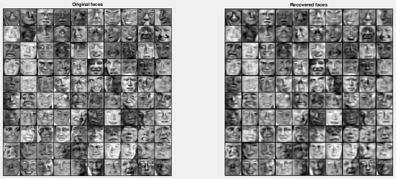
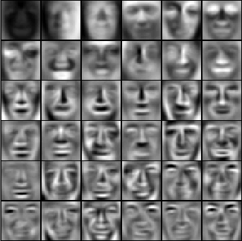

This week’s machine learning course is about Unsupervised Learning. Supervised Learning is to learn the weights from training examples with answers. Unsupervised Learning does not have such answers in the training examples.
What is K-Means Algorithm?
K-Means Algorithm is one of the supervised learning algorithm, to automatically find K clusters from the training points. It repeats the two steps iteratively until arrives at the optimal situation.
- Clustering assignment : assign each point (each training example) to a cluster centroid
- Move centroid : move centroid to the average position of all points belonging to it
A few things to pay attention to when implementing K-Means Algorithm
- Always normalise the features (zero-mean, better scaling)
- Local optimal is possible, depending on the initial K centroids used. Therefore, we should randomly initialise the K centroids many times and choose the one with the minimum cost function
- Choosing the K number: Elbow Method is not always good. It is better to choose the K number that best serves the downstream purpose.
Dimension Reduction Motivation
By working with lower dimensional data, we have the following advantages:
- Our learning algorithms can often run much much faster
- Use less memory or disk space
- Visualise data in a 2D plot if k = 2, or in a 3D plot if k = 3
PCA (Principle Component Analysis) algorithm
PCA finds a low dimensional “surface” onto which to project the training examples so that the sum of the projection errors is minimised.
Projection error means the projection distance which is the distance between points (All training examples X) and the projections. Think about each training example x as a point in a 3D space, and the “surface” as a 2D plane in the 3D space, the distance of the projection from the point x onto the 2D plane is the projection error (projection distance).
Let’s say we have an n-dimensional training example, and we want to reduce it to a k-dimensional training example.
The PCA will find k vectors - u(1), u(2), …, u(k), which will define the “surface”. u(1) .. u(k) are called eigenvectors or principal components.
How to reduce a training example from n dimension to k dimension?
X the training set, is an n*m matrix
- Sigma = (1/m)X’X, the covariance matrix
- [U,S,V] = svd(Sigma), take the U, n*n matrix, which are the eigenvectors (the principle components)
- Ureduce = U(:, 1:k), meaning take the first k columns of U, name it Ureduce, a n*k matrix
- z = Ureduce’*x transform each training example x into a k dimensional vector
Reconstruction from Compressed Representation
One can easily reconstruct each training example x (n-dimensional) from the compressed representation (k-dimensional) using xapprox = Ureduce*z
How to choose k (number of principal components)?
Choose a (smallest value of) k so that “99% of variance is retained”. Yes, we should try to retain as much variance as possible.
Is it possible to apply the mapping x -> z to cross validation and test set?
Yes, you should apply the same mapping x -> z you get from running PCA on the training set.
Caveat
Do not do PCA systematically in your ML system design, only apply PCA when your learning algorithm runs too slow.
Dimension Reduction showcase
On the left side of the following figure is the original features, each training example (face) is represented by 1024 pixels. When choosing only 100 principal components (reduction of factor of 10), we reduce the dimension of each training example from 1024 to 100. On the right side of the figure is the reconstructed features. Even some informations are lost by dimension reduction, the faces are still recognisable and we 10 times less features to compute.

The eigenvectors
Each of the following faces represents an eigenvector. Each eigenvector transforms one original 1024 dimensional (pixel) training example to 1 pixel of the 100 dimensional (pixel) reduced training example. The figure shows only the first 36 principle components:
